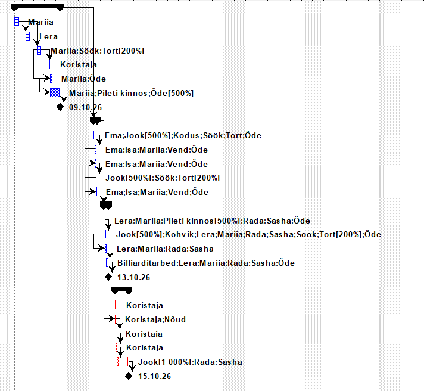
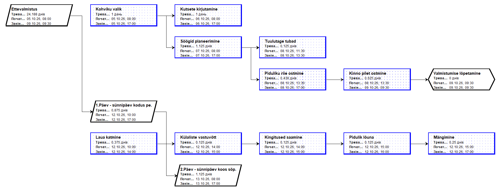

Gantt Chart
Klassikaline ribdiagramm, mis näitab ülesandeid ajajoonel koos sõltuvustega.
Network Diagram
Võrgudiagramm näitab ülesannete vahelisi seoseid ja kriitilist teed.
Resource Graph
Ressursigraafik näitab ressursside koormust ajas – tuvastab ülekoormuse.
Gantt Chart vaate kasutamine
Gantt Chart on vaikimisi vaade Microsoft Project'is. Vasakul on ülesannete tabel, paremal ribdiagramm. Ribad kujutavad ülesande kestust, nooljooned sõltuvusi.
Gantt riba värvide tähendus: sinine – tavaülesanne, punane – kriitiline tee, must romb – verstaposts.
View → Gantt Chart või Tracking Gantt (näitab planeeritud vs tegelik).

Network Diagram (võrgudiagramm)
Mine View → Network Diagram. Iga ülesanne kuvatakse kastina, sõltuvused nooltena. See vaade on hea kriitilise tee ja ülesannete seoste analüüsimiseks.
Kastid näitavad ülesande nime, kestust, algus- ja lõpuaega. Kriitilised kastid on tavaliselt punase raamiga.

Diagrammi eksportimine ja jagamine
Gantt Chart'i saab eksportida mitmel viisil:
• File → Print → vali printer Microsoft Print to PDF
• File → Export → Save Project as File → Excel Workbook
• Kopeeri Gantt graafik lõikelaua kaudu Word/PowerPoint dokumenti
File → Print Preview, et kontrollida, kas kogu ajakava mahub lehele.Videoõpetus: Diagrammide loomine
Vaata videost, kuidas erinevaid diagrammivaateid kasutada: